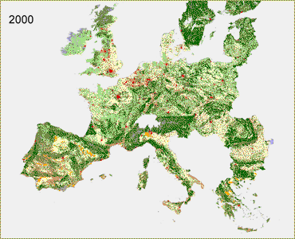

| Global Economy - A1 |
| Continental Market - A2 |
| Global Cooperation - B1 |
| Regional Communities - B2 |
| Regional Communities - B2 This scenario shows relative modest changes in landscape patterns due to the low rate of urbanization, to policies to maintain agricultural production in the 'Less Favoured Areas'. There are no policies to establish a European level network of natural areas. Land abandonment is therefore distributed over different landscapes and in smaller units. Modest increases in agricultural productivity in combination with the decrease of agricultural area offers opportunity to maintain diversity, natural and cultural-historical values in most rural areas. In this scenario there is an ambition to use 5.75% of fuel use from energy crops. This results in an increase of bio-energy crops that are for instance to be found in Northern Germany, Denmark, France, Poland and Spain. |
 Click here for full screen version |